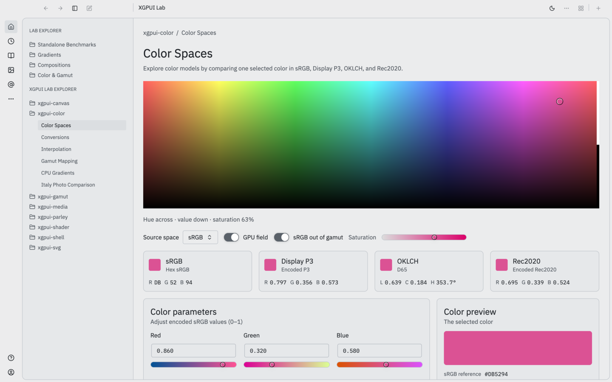

Lab Screen Design
How an XGPUI Lab screen is laid out and styled. Lab screens are technical presentations for desktop monitors: compact, value-dense and built entirely from the Look.

This page is a copy and can drift. The working specification is apps/xgpui-lab/docs/XGPUI-LAB-DESIGN.md, and the values come from src/screen/metrics.rs and the Look's tokens. When they disagree with this page, the code and that file win. Update this page when you change either.
Everything comes from the Look. Every chrome color, type style and control comes from the look-radix Look that theme::default_look() builds. This specification picks roles, scale steps and builders; it never defines a color of its own. The only literal colors on a lab screen are data: the colors the screen exists to show.
01One screen, one LabScreen
Every lab screen is a LabScreen from src/screen/. It has fixed slots and renders them in a fixed order, whatever order you fill them in. Leave a slot out only when the screen has nothing to put in it.
LabScreen::new("interactive-color-spaces", self.look.clone())
.crumb("xgpui-color", "Color Spaces")
.title("Color Spaces")
.lede("Explore color models by comparing one selected color in sRGB, Display P3, OKLCH, and Rec2020.")
.hero(Hero::full(self.render_field()))
.caption(format!("Hue across · value down · saturation {:.0}%", self.hsv.s * 100.))
.control(labeled_control(&self.look, self.source_choice.clone().into_element()))
.control(self.gpu_toggle.clone())
.notice(self.gpu_error.as_ref().map(|error| format!("Native color rendering unavailable: {error}")))
.cards(cards.into_iter().flatten())
.panels(self.parameters(), self.preview(preview))
.note("Changing source space preserves the selected color and converts its RGB coordinates.")02Page anatomy
1 Breadcrumb crate / Screen name
2 Title Screen name
3 Lede one sentence: what you compare or explore
4 Hero the thing being studied, the largest element
5 Caption live state of the hero in one line
6 Control row selectors · switches · actions (right)
7 Notices optional warnings
8 Cards up to four equal cards: variants or status
9 Panels [ Parameters · wide ][ Preview · narrow ]
10 Sections extra full-width elements or panels
11 Note how the controls relate, one or two sentences
12 Credits licenses, limits, what is not measured| Slot | Rule |
|---|---|
Breadcrumb · .crumb(owner, screen) | The crate that owns the feature, then the screen name, so a reader knows which extension the demo tests. |
Title · .title() | The screen name only. |
Lede · .lede() | One sentence, “Compare X…” or “Explore X…”. |
Hero · .hero(Hero) | The canvas, field, diagram or image comparison. Hero::full, with_legend (a square diagram with a legend column), compare (two panes side by side), fixed (a photo up to a maximum width) or stage. |
Caption · .caption() | One line of live values separated by ·. It replaces loose status lines such as Sweep false. |
Control row · .control(), .action() | Selectors first, then switches. Actions such as Open image… and Reset view sit at the right. |
Cards · .cards(), .card() | Equal-width LabCards, each a variant being compared or a status. Use the count you have, up to four. |
Panels · .panels(wide, narrow) | A wide Parameters panel with editable values and a narrow Preview, Chain or Details panel showing their result. |
Note, credits · .note(), .credits() | Plain text on how the controls relate; data sources, licenses and what the screen does not measure. |
03Color
The Lab's Look is Radix with one cool neutral (#5A6169) seeding both the accent and gray palettes, so lab chrome has no brand accent; the subject supplies the color. Dark mode is the default. Every screen must work in light and dark.
| Use | API | Radix step |
|---|---|---|
| Page background | chrome().content_background | gray 1 |
| Cards, panels | chrome().panel_background | gray 2 |
| Card, panel and divider borders | chrome().border | gray 6 |
| Titles, body text, values | chrome().body_text | gray 12 |
| Lede, captions, subtitles, keys | chrome().muted_text | gray 11 |
| Selected, hovered, pressed card | interaction_colors().background(selected, state) | gray 3 / 4 / 5 |
| Focus ring | resolve_role(SemanticRole::Focus) | color 8 |
For anything else, take a gray step with look.resolve_step(ScaleFamily::Gray, n) and use it as Radix defines: 1–2 backgrounds, 3–5 component fills, 6–8 borders, 9–10 solid fills, 11 low-contrast text, 12 high-contrast text.
- No literal chrome colors. If a screen needs a color that is not a role or a step, add the role to look-radix or to
ColorVizLookExtintheme.rs. - Data colors are the exception. Swatches, slider tracks and field fills are computed from the color math. Gamut outlines use one fixed color per gamut (
GAMUT_SRGB,GAMUT_P3…), the same on every screen. Markers are a 2 px cross over a 4 px halo. The strip under a gradient bar marks samples outside the target gamut inOUT_OF_GAMUTamber. Keep data colors in one module per screen family, named for what they mean. - Badges are a free slot. A card or comparison pane places whatever badge the screen passes, usually a look-radix
Badge. Keep the text short, and make it carry the meaning without its color.
04Type
Type comes from the Look's typography tokens (look.common_stylesheet().tokens.typography) through a TextRole. A screen picks a role; it never sets a size, weight or family. Change a token in the Look and every screen follows.
| Role | Use | Token (Luma default) |
|---|---|---|
Title | Screen title | role.h2 · 28 / 36 semibold |
Section | Panel title | role.h3 · 20 / 28 semibold |
Name | Card name, compare-pane title | role.h4 · 16 / 22 medium |
Crumb, Lede, Caption | Breadcrumb, lede, live state, notes, panel subtitles (muted) | role.p · 14 / 20 |
Field | Parameter label above its field | role.p · 14 / 20 |
Label, Detail | Keys and small labels (muted); legend names and chain steps | label · 12.5 / 18 medium |
Value | Measured or edited values | code · 13 / 18, in font.mono |
Fine | Credits and provenance (muted) | caption · 11 / 16 medium |
UI face for words, mono for values
- Names, labels, keys, sentences and control text use the UI face.
- Channel values, coordinates, hex, percentages in a legend and axis ticks use mono. Mono digits have equal width, so values don't shift while they change and they line up across rows.
- A value has a key: the key in
Label, the value inValue, as inR 0.797orClip #00FF00. Build key/value rows withscreen::readout(look, pairs). - One size for values everywhere, including the text fields that edit them (
screen::value_field_look). Only diagram axis ticks are smaller (10 px). - Numbers inside a sentence, such as the live caption, stay in the UI face.
- One mono family: the Look's
font.mono, throughscreen::mono_family(look). The Lab bundles IBM Plex Mono (OFL) so it renders the same on every platform. Never write a family name in a screen: a name that is not installed, including"monospace", silently falls back to the UI font. - Fix decimals per quantity (channels
0.000, factors0.00, chromaticity0.0000, angles0.0°), write hex in upper case, and put units on values (16 px,1536×1024).
05Desktop density
The Lab runs on desktop computers with landscape monitors, so vertical space is the scarce dimension. Avoid vertical scrolling that isn't needed.
- A heading and its subtitle are one unit. Stack a panel title and its subtitle, or a card name and its subtitle, with no gap; their line heights separate them.
- Spend width before height. Cards, panels and parameters wrap into rows rather than stacking.
- No decorative vertical space. Gaps separate different groups, nothing else.
Sizes come from LabMetrics::STANDARD in src/screen/metrics.rs, never from new numbers in a screen.
| Thing | Value |
|---|---|
| Content column | max width 1240 px, centered; padding 1.5 rem; 1.25 rem between parts |
| Header (crumb, title, lede) | 0.5 rem between lines |
| Control row | wraps; 0.75 rem gap |
| Cards | equal width, at least 200 px; 28 px swatch or 32 px icon |
| Card and panel surface | panel_background, 1 px border, rounded_lg, gap_3 |
| Panels | wide: grows 2×, basis 440 px, min 240 px · narrow: grows 1×, basis 265 px, min 225 px |
| Hero | at least 400 px; legend column 220 px |
| Parameters | up to three columns; each at least 100 px |
| Settings form | labels 104 px; groups at least 200 px |
| Control radius, height, focus ring | the Look's metrics, through the builders |
06Controls
Use look-radix builders with .look(look). Don't draw controls with raw div styling.
| Need | Builder | Notes |
|---|---|---|
| Pick one of several | lab_controls::Choice (Radix Selector) | Label to the left, in the control row |
| Boolean that changes the hero | Radix Switch | Never a text boolean like Sweep false |
| Action | Radix Button, icon_button | Right end of the control row, or a panel heading when it acts on that panel only |
| Numeric value | Radix TextField + Slider | Kept in sync; the field uses the value's mono size |
| Color channel | xgpui_luma_color::color_slider | The track shows the channel's real color sweep |
| Selectable card | screen::card_button | A ghost button with the card surface; fill from interaction_colors() |
07Components
| Component | Rules |
|---|---|
LabCardvariant or status | Swatch or icon, name, optional badge; a muted subtitle; mono values. Name and subtitle stay on one line and truncate. A status icon is a plain 32 px line icon in Foreground, with no box, so it never reads as a button. |
ParametersPanel | Each Param is a label in Foreground, an optional muted range, a text field and a slider, in up to three columns. Mark a neutral value (1.0 for factors, 0 for rotation) so changes stand out. |
PreviewPanel | One large result swatch, or a pair, with a caption and a mono value under each. A reference line ends the panel. |
ChainPanel | An ordered pipeline as numbered rows: name left, formula or value right in mono. Active rows in Foreground on the selected fill; neutral rows muted. Ends with “N of M steps active”. |
PanelShell, properties | For diagnostics: a titled panel with an optional heading action and key/value rows (keys 140 px, top-aligned). |
form_groups | Many override selectors grouped by what they affect, as titled columns. Labels align and stay on one line. A row still on its default has a muted label; Reset sits in the panel heading and is disabled when nothing differs. |
ComparePane | Two panes side by side, each headed Name · subtitle · badge, drawing the same source at the same size on a gray 3 stage. |
Diagram and Legend | Grid on gray 4–6, ticks and axis names in gray 11, outline in gray 11–12. Series use their data colors; the selected series gets a heavier stroke, not a new color. The legend explains the markers. |
08Writing
- Name things the way the reader knows them (Upload, Sample, Tint), not by internal type names.
- Status reads
Thing · value · value, notThing: value, Flag false. - The fine print states limits plainly: what is a preview, what is simulated, what is not measured.
- No emoji and no exclamation marks in UI text.
09Review checklist
- The screen is a
LabScreen, so its parts follow the anatomy order. - No chrome color is a literal; data colors live in one named module and gamut colors match the other screens.
- The screen reads correctly in light and dark mode.
- Snapshots before and after the change compare as expected (regression snapshots).
- Controls are look-radix builders; no boolean is shown as text.
- The hero is the largest element, and the caption under it shows live values.
- Cards are equal width, and no name, subtitle or badge wraps.
- Values are mono, with fixed decimals and units.
- The fine print credits external data and names what is not measured.
The full working specification, with reference screens and mockups, is apps/xgpui-lab/docs/XGPUI-LAB-DESIGN.md. It is the source of truth; this page summarizes it and is updated by hand.